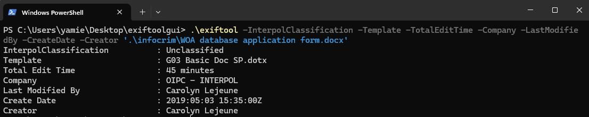
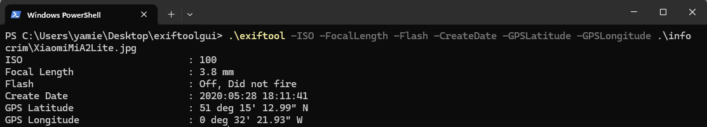
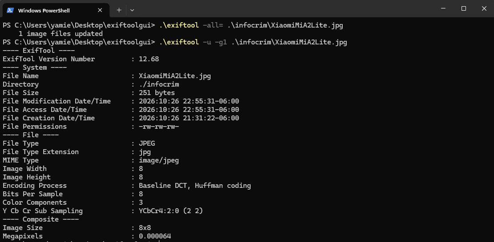

La fotografía como testigo: extracción de metadatos GPS para geolocalización.
Parte I. Análisis de matadatos del fichero WOA database application form.docx.
¿Cómo categorizó el archivo INTERPOL?
Unclassified
¿Qué template fue utilizado para la elaboración del archivo por parte de INTERPOL?
G03 Basic Doc SP.dotx
¿Cuál fue el tiempo total de edición del fichero?
45 minutes
Identifique la Compañía propietaria del fichero.
OIPC - INTERPOL
¿Quién realizó la última modificación del fichero?
Carolyn Lejeune
6. ¿Cuál fue la fecha de creación del fichero en investigación?
2019:05:03 15:35:00Z
De acuerdo al análisis de matadatos del fichero de INTERPOL, identifique el creador del mismo.
Carolyn Lejeune

Parte II. Análisis de matadatos del fichero XiaomiMiA2Lite.jpg
¿Cuál fue la apertura ISO utilizada?
100
¿Cuál es la longitud focal de la cámara con la que fue capturada la imagen?
3.8 mm
¿Señale si se utilizó la captura con Flash para obtener la imagen?
Off, Did not fire
Señale la fecha de creación del archivo.
2020:05:28 18:11:41
Identifique los datos de ubicación GPS y señale el lugar exacto dónde la fotografía fue tomada.
GPS Latitud: 51 deg 15' 12.99" N
GPS Longitud: 0 deg 32' 21.93" W
Ubicacion en google maps

Elimine todos los metadatos de la muestra que se analiza.
